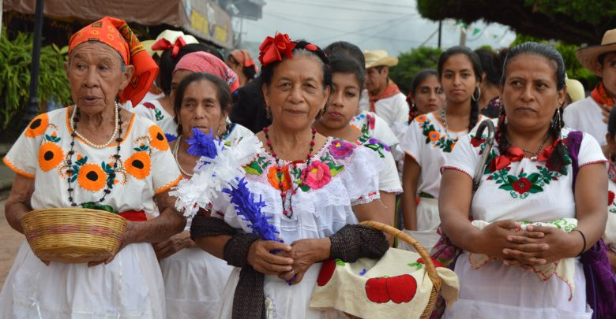
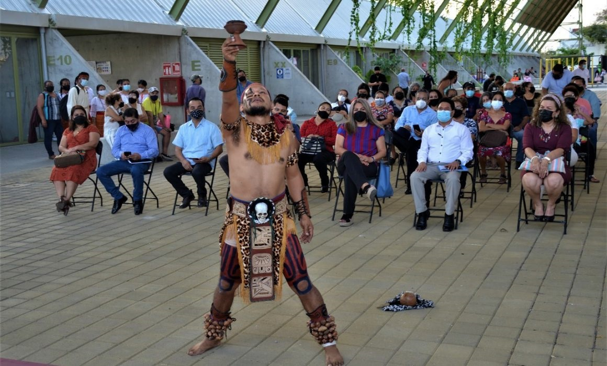

Los mam se ubican en las regiones Soconusco, Sierra y algunas comunidades dispersas en la selva del estado de Chiapas en México; y en los departamentos de San Marcos, Huehuetenango,

.Quetzaltenango y Retalhuleu en el altiplano de Guatemala. El vestido de la mujer mazahua, constituye una preservación cultural, está compuesto de falda de manta blanca que remata con bordados de motivos zoomórficos o florales. Sobre esa falda, usa otra de satín, de colores fuertes, como el amarillo, rosa mexicano, morado, verde, lila y azul rey.
| Imagen | Precio | Audio |
|---|---|---|
 |
$120 | |
|  | $210 | |
|  | $250 |
El mam es una agrupación lingüística que pertenece a la familia maya. La lengua genéticamente más cercana a esta agrupación, es el teko. El mam se habla en los estados de Chiapas, Campeche y Quintana Roo. En el último censo realizado por INEGI en 2010, se registraron 10,467 hablantes de mam.